Evidence Based
Nutrition guidance backed by science.
Learn the science of nutrition through practical guides, balanced meal plans, healthy food choices, and evidence-based advice to build muscle, lose fat, and improve your overall health.
Nutrition guidance backed by science.
Simple advice that's easy to follow.
Free meal plans, guides, and resources.
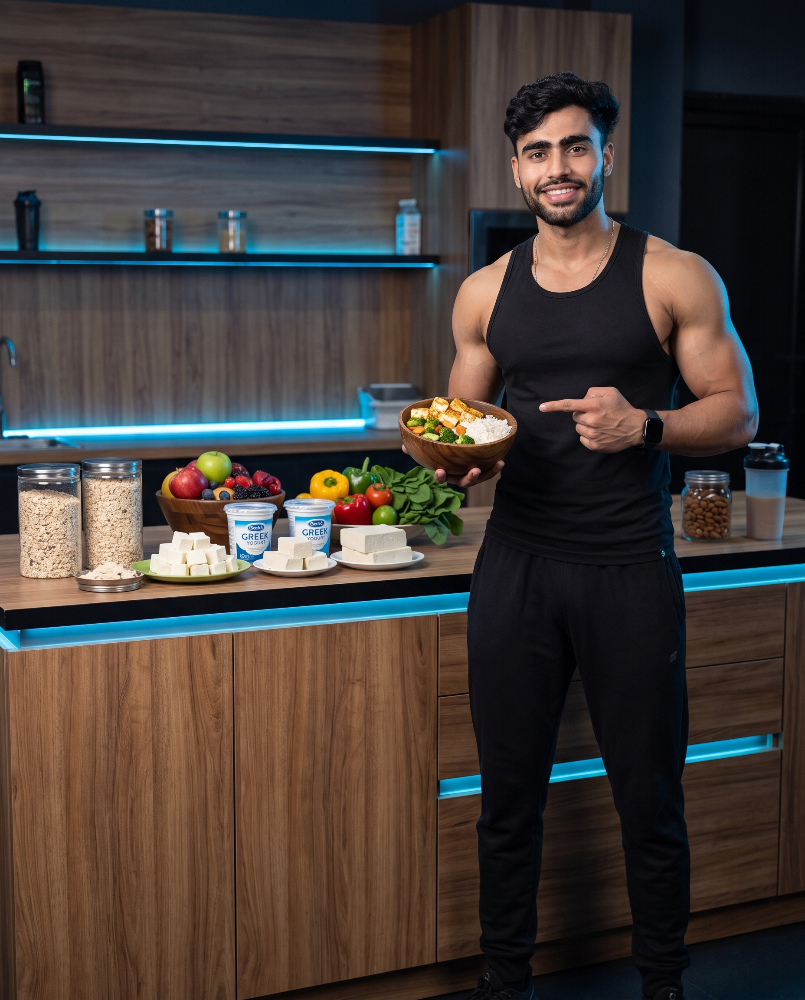
Explore expert nutrition advice for muscle gain, fat loss, healthy eating, supplements, hydration, and more.
Learn how to eat for maximum muscle growth with balanced calories and protein-rich meals.
View GuideDiscover healthy calorie deficits, fat-burning foods, and sustainable weight-loss strategies.
View GuideExplore the best vegetarian protein sources to support muscle recovery and strength.
View GuideReady-to-follow meal plans for beginners, athletes, and busy professionals.
View GuideUnderstand protein, creatine, vitamins, and supplements backed by science.
View GuideLearn how proper hydration improves performance, recovery, and overall health.
View GuideChoose a meal plan that matches your fitness journey. Whether your goal is building muscle, losing fat, or eating healthier, we've got you covered.
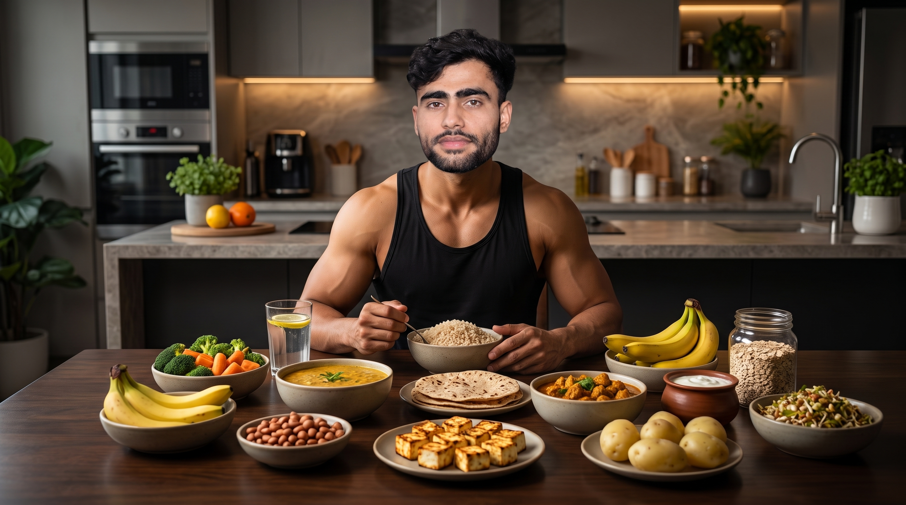
High-protein meals designed to support muscle growth, recovery, and strength.
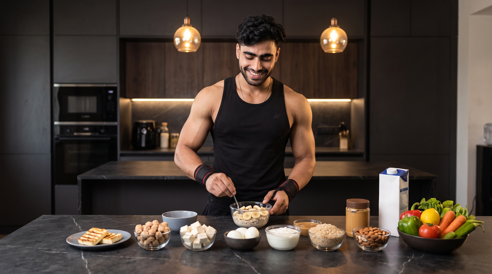
Balanced meals with controlled calories to help you lose fat while maintaining muscle.
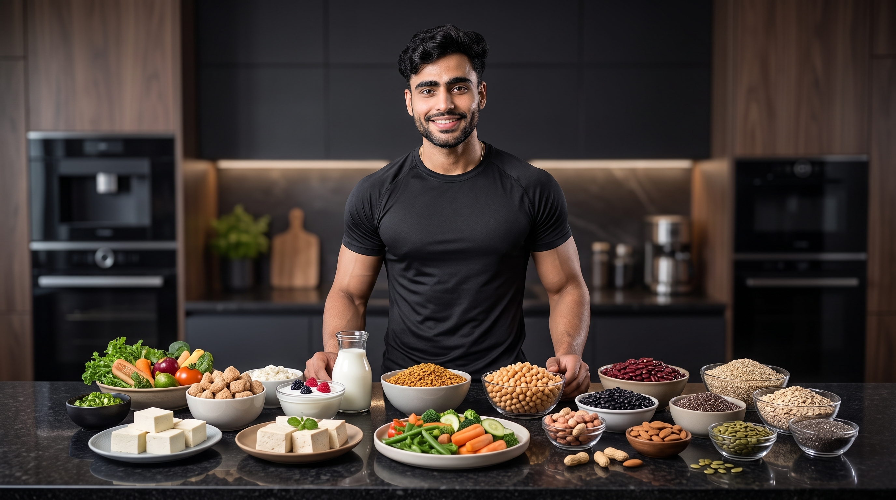
Protein-rich vegetarian meals featuring paneer, soy chunks, lentils, tofu, and dairy.
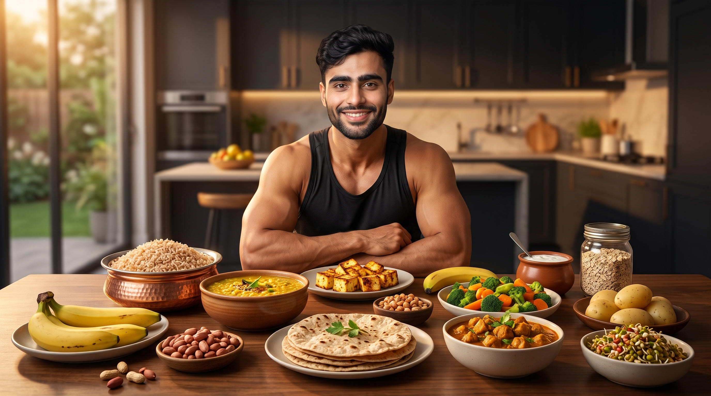
Healthy, affordable meals using simple Indian ingredients without compromising nutrition.
View Meal PlanDiscover protein-rich vegetarian foods that support muscle growth, recovery, strength, and overall health.
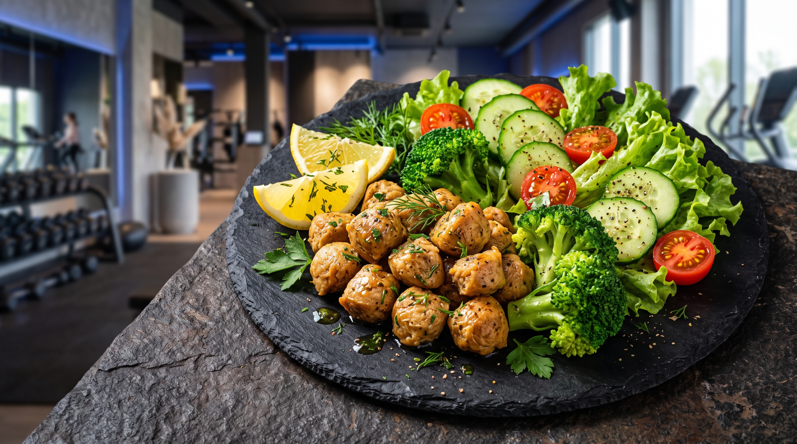
Rich in complete protein and calcium, making it one of the best foods for muscle gain.
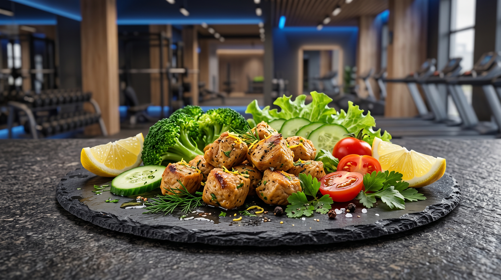
One of the highest-protein vegetarian foods for building lean muscle.
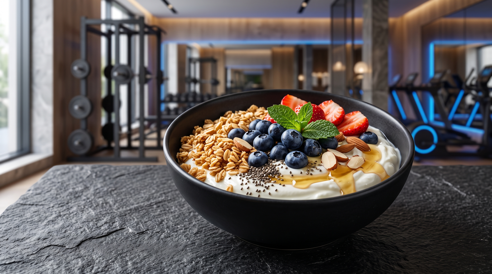
High in protein, probiotics, and perfect for post- workout recovery.
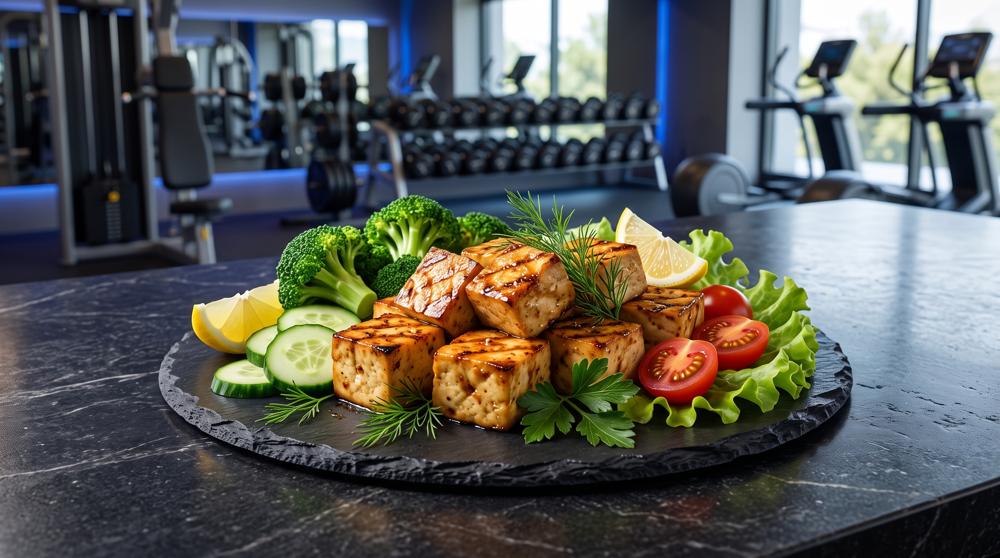
A versatile plant-based protein packed with essential amino acids.
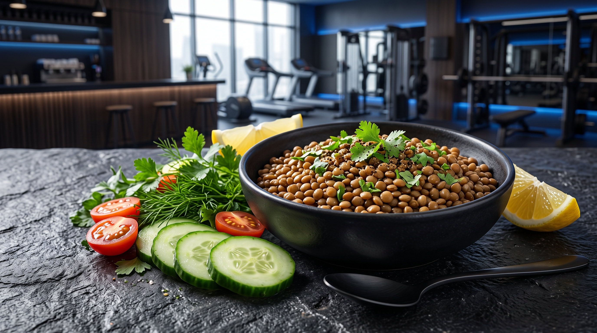
A nutritious source of protein, fiber, and complex carbohydrates.
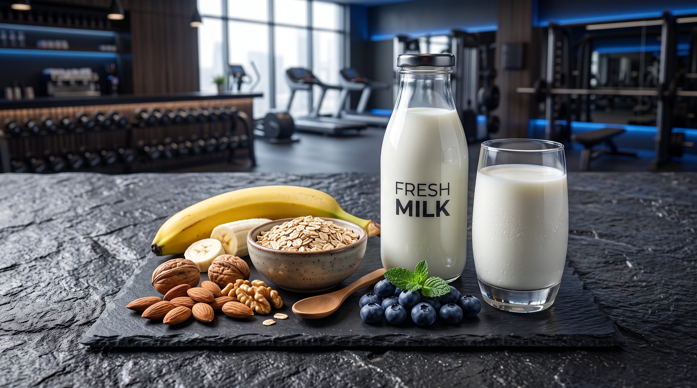
A complete protein source that supports muscle recovery and strong bones.
Explore expert articles on muscle gain, fat loss, protein, hydration, supplements, and healthy eating to achieve your fitness goals.
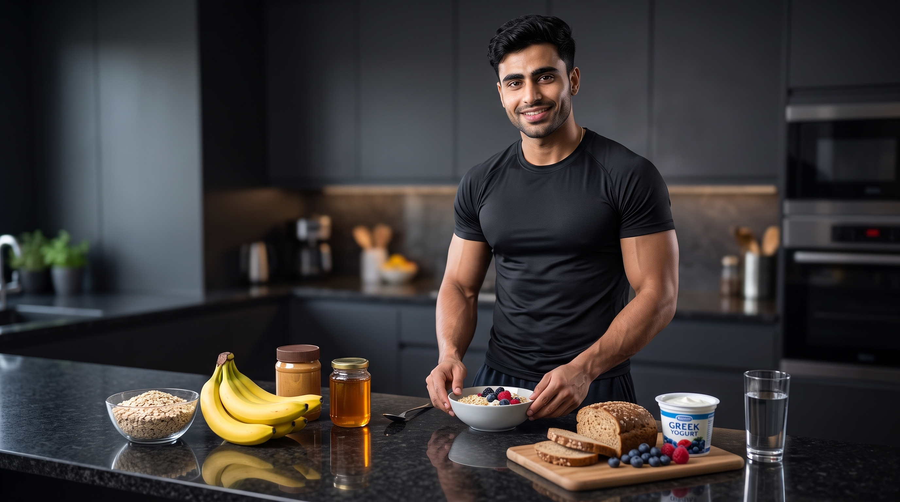
Learn the best foods to boost energy, improve endurance, and maximize your workout.
Read Article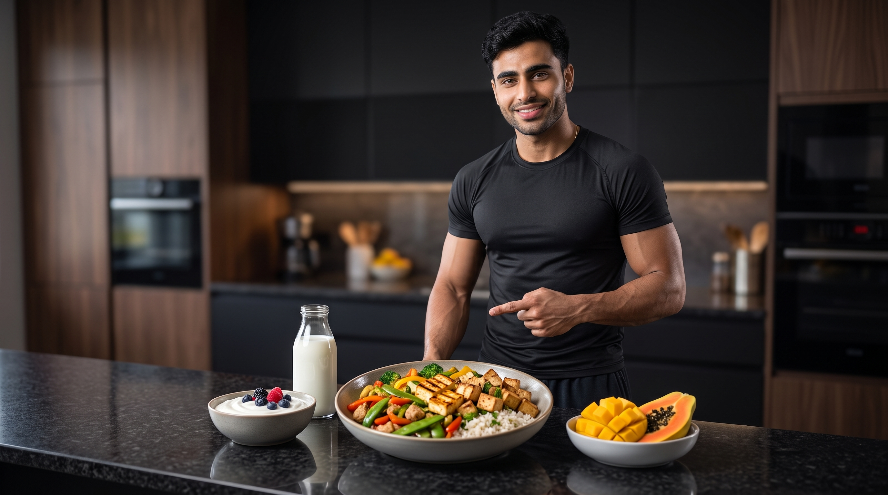
Discover the ideal balance of protein and carbohydrates for faster recovery and muscle growth.
Read Article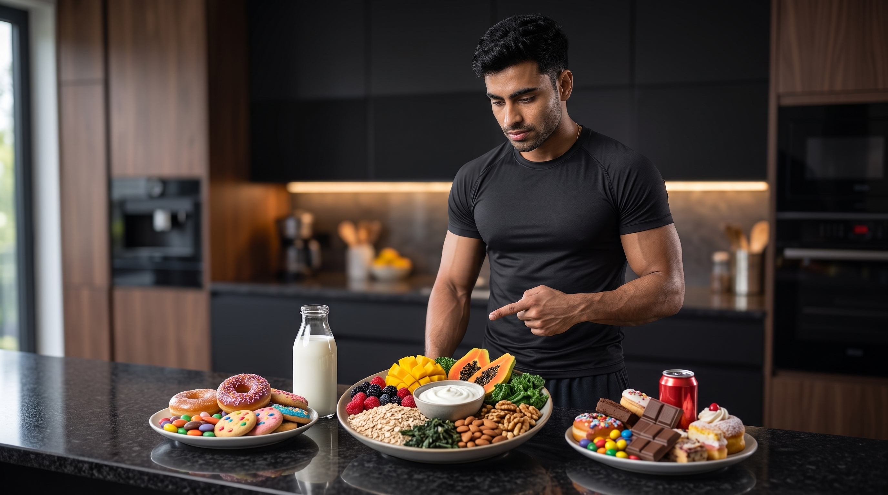
Understand why sugar cravings happen and how to control them naturally.
Read Article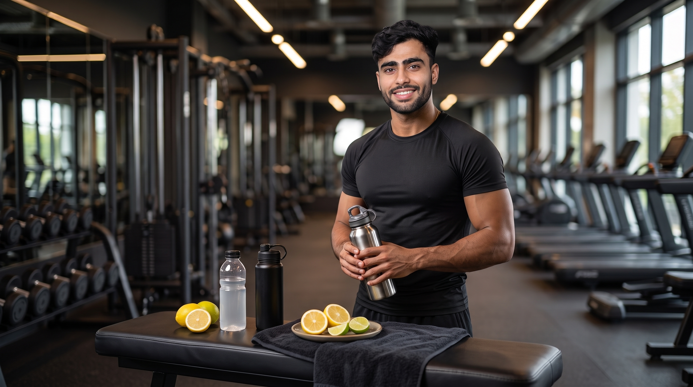
Learn how hydration affects strength, endurance, recovery, and overall health.
Read Article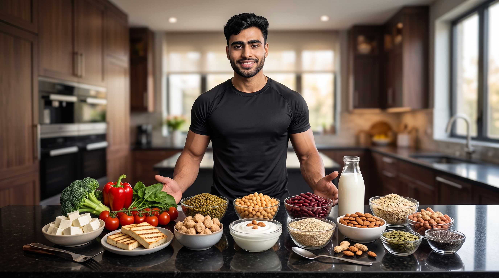
Discover affordable, high-protein vegetarian foods for muscle building.
Read Article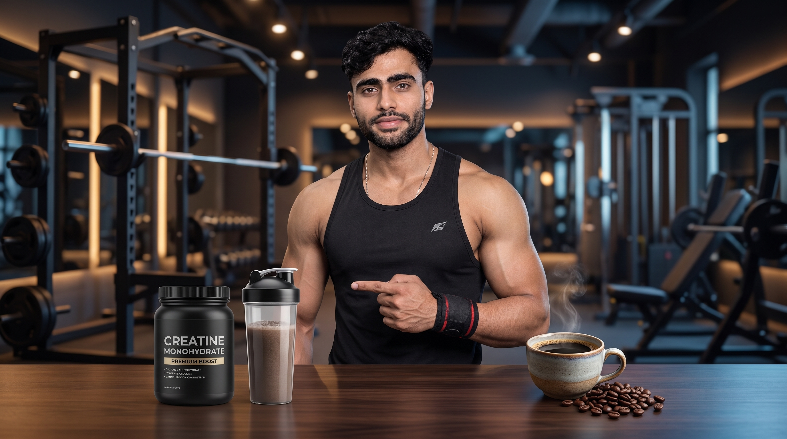
Compare their benefits, timing, performance effects, and common myths.
Read ArticleStop guessing your nutrition. Use our free fitness calculators to estimate calories, protein needs, hydration, and more in just a few seconds.
Estimate your daily calorie requirements based on your age, weight, height, and activity level.
CalculateFind out how much protein you need every day for muscle gain, recovery, and better performance.
CalculateCalculate your Body Mass Index and understand whether you're underweight, healthy, or overweight.
CalculateCalculate your recommended daily water intake based on your body weight and lifestyle.
CalculateFind answers to the most common nutrition questions. Learn how to eat smarter, build muscle, lose fat, and improve your overall health.
Most active people should aim for approximately 1.2–2.2 grams of protein per kilogram of body weight, depending on their fitness goals.
Yes. Foods like paneer, soy chunks, tofu, lentils, milk, Greek yogurt, and legumes can provide plenty of protein for muscle growth.
Eat a balanced meal containing carbohydrates and protein about 1–3 hours before training to support energy and performance.
Water needs vary by person, but staying hydrated throughout the day is important, especially before, during, and after exercise.
Not necessarily. A balanced diet should come first. Supplements can be useful when they help fill nutritional gaps, but they are not a replacement for healthy eating.
No. Carbohydrates are an important energy source. Fat loss depends on overall calorie balance, not simply eliminating carbs.
Build muscle, lose fat, and improve your health with expert workout guides, nutrition advice, meal plans, calculators, and evidence-based fitness resources—all in one place.
Exercises
Nutrition Guides
Fitness Calculators
100% Free Resources